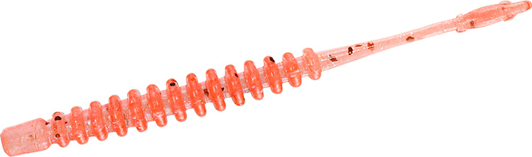
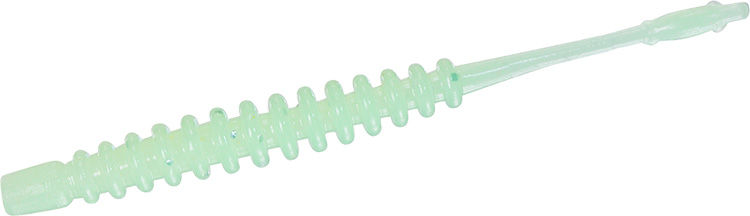
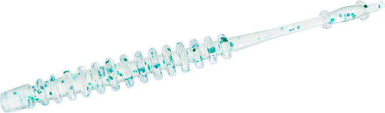
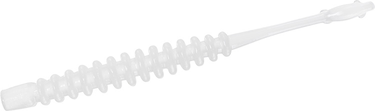

月下美人 アジングビーム2.0
（GEKKABIJIN AJING BEAM）
更新日：2026年11月3日
月下美人 アジングビーム2.0（GEKKABIJIN AJING BEAM）はDAIWA（ダイワ）のアジング用ワームです。
ライトゲームの定番ワーム「アジングビーム」を、形状や素材はそのままに集魚コア仕様にリニューアルした2インチ。コアに通常の約90倍の濃度のエビ成分を配合し、外側の透明感を残しながらニオイと味の持続性を高めているのが最大の魅力です。

画像出典:DAIWA公式HP
スペック
- メーカー
- DAIWA（ダイワ）
- タイプ
- ワーム（ジグヘッドリグ）
- サイズ
- 2インチ
- 入数
- 10本
- 素材
- エラストマー
- ターゲット
- アジ・メバルなどライトゲーム全般
- 価格
- 550円（税込）
▼今すぐチェック

月下美人 アジングビーム2.0の特徴
定番の形はそのまま、エビ粉コアで「食わせ」を強くした2インチ
-
エビ粉コアでニオイと味が長持ち
エビ粉をコアに集中して配合することで、外側の透明感を残したまま、ニオイと味の持続性をアップ。コアには通常の約90倍の濃度のエビ成分が入っている。
-
実績のある定番アジングビームの形
ライトゲームの定番として使われてきたアジングビームの形状と素材はそのまま。エラストマー素材で、使い慣れた操作感のまま集魚力だけを上げている。
-
全22色のカラーラインナップ
定番カラーを残しつつ、クリームソーダ・常夜アミオレンジ・イカゴロブラックの新色も追加。夜光系・クリア系・淡色系・UV系までそろい、状況に合わせて選べる。
月下美人 アジングビーム2.0の使い方
ジグヘッドにまっすぐ刺してキャストし、カウントダウンでレンジを決めるのが基本。ただ巻きやリフト&フォールで、アジがいるレンジを繰り返し通します。
食いが渋い時は、ロッドを軽くあおってから止め、テンションフォールでじっくり見せる。エビ粉コアのニオイと味で、くわえた後に離しにくいのが強みです。
月下美人 アジングビーム2.0の得意な状況
常夜灯まわりの港内アジングが最大の出番。アミを食べているアジや、ショートバイトが続いてなかなか乗らない状況で頼りになります。
メバルやカサゴなどライトゲームの魚全般にも使いやすく、迷ったら最初に結びたい2インチです。
くわえた後に離しにくいので、ショートバイトが多い日でも釣れるワームです。
ワンポイント
エビ粉はコアに集中して入っているので、外側の透明感はそのまま。クリア系のカラーでも、ナチュラルな見た目のままニオイと味で食わせられます。
カラーは夜光系・クリア系・淡色系を1本ずつ持っておくと、常夜灯の明るさや潮色に合わせて選びやすくなります。
アジングビームシリーズの使い分け
| モデル | 集魚成分 | 特徴 |
|---|---|---|
| アジングビーム（従来品） | 集魚コアなし | 2.0の元になった定番モデル |
| アジングビーム2.0 | コア：エビ粉（通常の約90倍の濃度）／外側：エビオイル | 形状・素材は従来品のまま集魚コア仕様に。全22色・550円（税込）（本記事のモデル） |
| アジングビーム極み | コア：エビ粉／外側：エビオイル＋アミノX | アミノ酸の誘引成分「アミノX」で集魚力をさらに強化。全6色・605円（税込） |
| アジングビームFAT | コア：エビ粉（集魚成分） | 2インチを太く短くした1.5インチ。水をつかんでフォールが遅く、アミパターンやドリフトに。全19色・550円（税込） |
アジングビーム2.0は、定番のアジングビームを形状や素材はそのままに、コアにエビ粉を集中して配合した「集魚コア仕様」にリニューアルしたモデル。見た目や使い心地は従来品と同じで、ニオイと味の持続性だけが上がっています。新色のクリームソーダ・常夜アミオレンジ・イカゴロブラックも2.0から加わりました。
さらに集魚力を上げたいなら、外側にアミノXを加えた「極み」へ。普段は2.0、反応が渋い日は極みと使い分けるのがオススメです。アミパターンで小さく見せたい時は、1.5インチのアジングビームFATも選択肢になります。
人気カラー
月下美人 アジングビーム2.0は全22色展開。その中から人気カラーを紹介します。

アミピンクアミパターンの定番ピンク。常夜灯まわりでまず投げたい1色。

クリームソーダ2.0で加わった新色。淡いグリーン系のやさしい色で、見せて食わせたい時に。

ちりめんじゃこ小魚を食べている時に合わせやすいナチュラル系。澄み潮やスレたアジに。

グローホワイト夜光で存在感を出すホワイト。暗い場所や濁りでアピールしたい時に。
画像出典:DAIWA公式HP
月下美人 アジングビーム2.0に似ているルアー
-
 ミゾーン2.0
クリアブルー
詳細はこちら＞
ミゾーン2.0
クリアブルー
詳細はこちら＞
2インチのリブ系ピンテール。浅リブの微振動で誘いたい時のローテーションに。
-
 ドライブS.AJ
レイン
詳細はこちら＞
ドライブS.AJ
レイン
詳細はこちら＞
2インチのアジング用ワーム。テールの動きで静と動を使い分けたい時に。
-
 マギア2.1インチ
エーテル
詳細はこちら＞
マギア2.1インチ
エーテル
詳細はこちら＞
逆リブで強い波動を出す2.1インチ。アピールを強めたい時に。